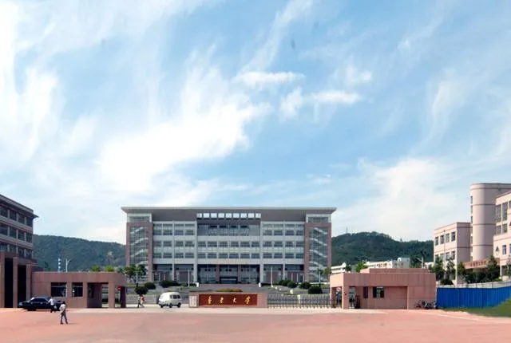
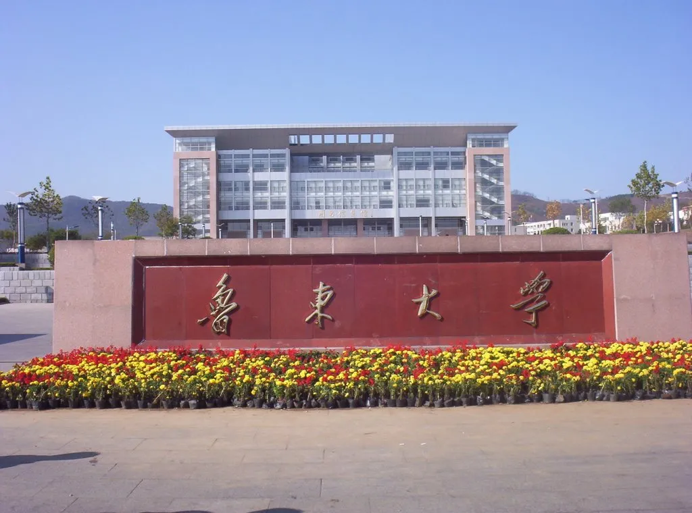

踏入鲁东大学的校门，仿佛走进了一幅徐徐展开的山水画卷。春日的校园，是被樱花与玉兰唤醒的。从西门沿着主路漫步，道路两旁的樱花树如粉色的云霞，风过时，花瓣簌簌飘落，像一场温柔的雪，落在肩头，落在青石板路上，连空气里都弥漫着清甜的香气。不远处的玉兰园里，白玉兰与紫玉兰交相辉映，硕大的花朵在枝头绽放，宛如一盏盏精致的玉杯，盛着春日的阳光与希望。若沿着小径往北走，便会遇见那片宁静的镜湖，湖水清澈如镜，倒映着岸边的垂柳与远处的教学楼。春日里，湖面上常有野鸭嬉戏，它们时而潜水，时而振翅，打破了湖面的平静，却又添了几分生机。湖边的垂柳抽出嫩绿的新芽，细长的柳枝随风摇曳，仿佛在轻抚湖水，诉说着春日的絮语。绕过镜湖，是一片开阔的草坪，春日里，小草从土里探出头来，嫩绿得仿佛能滴出水来。草坪上，三三两两的学生或坐或躺，有的在读书，有的在聊天，还有的在放风筝，五彩的风筝在蓝天上翱翔，与地上的欢声笑语相映成趣。草坪的边缘，几株桃树开得正艳，粉红的桃花与嫩绿的草坪形成鲜明的对比，宛如一幅色彩明丽的油画。再往深处走，便是那片静谧的竹林，竹叶青翠欲滴，阳光透过竹叶的缝隙洒下，形成斑驳的光影。走在竹林小径上，耳边是风吹竹叶的沙沙声，仿佛置身于世外桃源，所有的烦恼都被这清新的绿意与宁静的氛围所洗涤。鲁东大学的春日，是自然的馈赠，是青春的画卷，每一处风景都值得驻足，每一缕气息都值得回味。
夏日的鲁东大学，是绿意与活力的交响。当太阳渐渐升高，校园里的树木愈发葱郁，枝叶交错，形成一片片浓密的绿荫。主路两旁的法国梧桐，叶片宽大而厚实，像一把把绿色的巨伞，为过往的师生遮挡烈日。走在树荫下，微风拂过，带来一丝凉爽，也带来了树叶的清香。教学楼前的花坛里，月季、蔷薇开得正盛，红的、粉的、黄的，争奇斗艳，引得蜜蜂与蝴蝶在花丛中忙碌。校园里的荷塘，是夏日里最动人的风景。荷叶田田，像一个个碧绿的圆盘，铺满了整个水面。荷花从荷叶间探出头来，有的含苞待放，有的已然盛开，粉嫩的花瓣上沾着晶莹的水珠，宛如仙子般亭亭玉立。清晨，荷塘上弥漫着一层薄薄的雾气，荷花在雾气中若隐若现，宛如仙境。傍晚，夕阳的余晖洒在荷塘上，水面泛起金色的波光，荷花与荷叶的倒影在水中摇曳，构成了一幅宁静而美好的画面。校园里的运动场，是夏日里最热闹的地方。傍晚时分，夕阳西下，运动场上便热闹起来。篮球场上，男生们挥洒着汗水，奔跑、跳跃、投篮，每一个动作都充满了力量与激情。足球场上，球员们追逐着足球，传球、射门，配合默契，呐喊声与欢呼声此起彼伏。跑道上，有人慢跑，有人快走，享受着运动带来的快乐。运动场边的看台上，坐着不少观众，他们为场上的运动员加油助威，脸上洋溢着青春的笑容。夏日的夜晚，校园里依然充满活力。路灯下，有人散步，有人聊天，还有人弹着吉他，唱着歌。宿舍楼前的空地上，偶尔会有学生组织的小型活动，音乐声、欢笑声交织在一起，构成了夏日校园里最动听的乐章。鲁东大学的夏日，是热烈的，是充满活力的，每一寸土地都洋溢着青春的气息，每一个瞬间都值得铭记。
鲁东大学礼堂

鲁东大学图书馆

鲁东大学校门